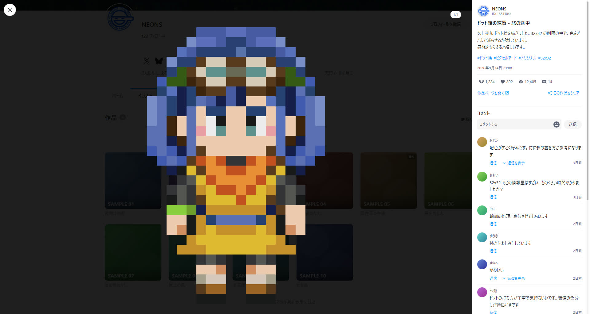
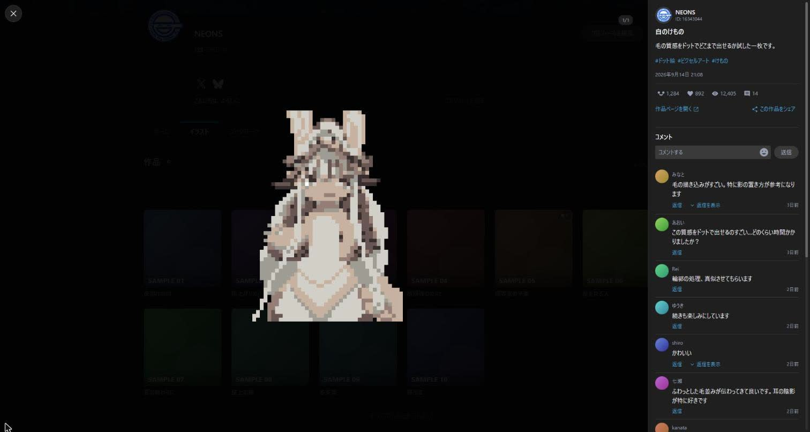
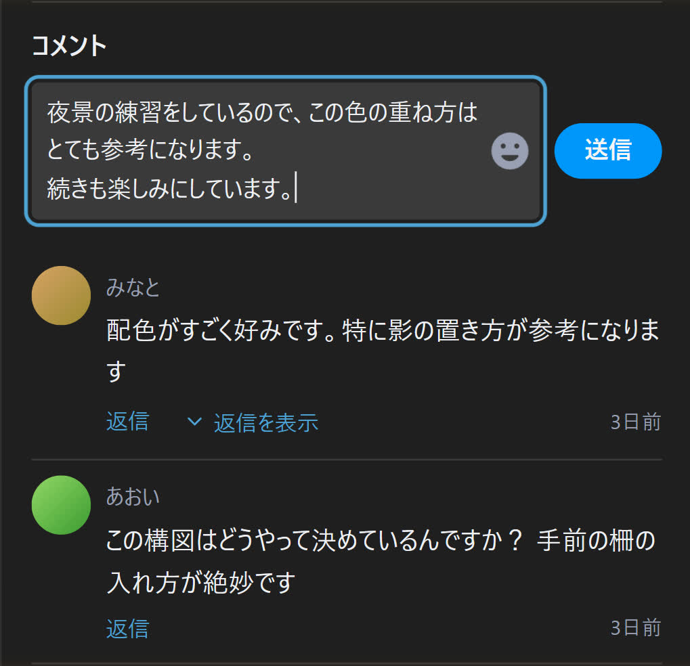
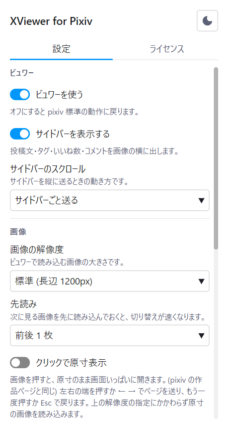

Chrome / Brave / Edge
Read pixiv the way you read X.
Click an artwork on a user page and it opens right there, without navigating away. Page through multi-image works, play ugoira, read the caption and comments, like, bookmark, follow and post a comment - all inside the viewer. Close it and you are back on the grid, at the scroll position you left.
The extension is awaiting store review. This button will go live once it is published.

Stay on the grid, all the way through
Every artwork you open costs you a page load, and every step back costs you your place. This extension removes that round trip.
Opens in place
The viewer takes over the grid click and renders without navigating. The URL still changes to the artwork page, so reloading and sharing both work.
Multi-image works
Arrow keys and the on-screen arrows page through the work. Neighbouring images are prefetched, so there is nothing to wait for.
Work to work
Up and down move to the previous or next work in the grid. Reach the end and the next page is loaded for you. On the illustration and manga tabs, only works of that kind are visited.
Ugoira playback
The zip is decoded into frames and played in the viewer, with pause and resume.
Full size
Click the image to open it at its original resolution, filling the screen. You can keep paging through the work while it is open.
Read and write comments
Stamps and emoji are rendered as images, replies expand in place, and more comments load on demand. Posting, replying and deleting your own comments all work without leaving the viewer.
Like and bookmark
Follow and share to X, Facebook, Pawoo or the clipboard, all from inside the viewer. Hold Shift while bookmarking to keep it private. None of them are shown on your own works.
Dark and light
The viewer follows pixiv's own theme setting, so there is no second preference to keep in sync.
The caption and comments, beside the image
The sidebar carries the caption, tags, post date, like / bookmark / view counts, and the author's avatar and follow button. Comments render stamps and emoji as images, and replies open in place.
- Scroll the whole sidebar, or pin the caption and scroll only the comments
- If a request fails, retry picks up where it stopped
- A like you already gave in another tab is never counted twice
- Hide the sidebar entirely to see nothing but the image

Reply without closing anything
Comments and replies can be posted with the viewer still open. The box grows with what you type, and emoji and stamps come from a panel. Ctrl + Enter sends; Enter is a line break.
- Your own comments can be deleted behind a two-step confirmation
- Esc will not close the viewer while a draft is unsent
- A comment posted here is exactly a comment posted on pixiv

An uninterrupted list
The paginator on illustration and manga listings can be replaced with continuous loading. The page number in the URL follows whatever is on screen, so a reload brings you back to roughly the same place.
- Load when you reach the bottom, or always keep one page ahead
- Hide the pickup section on a profile home to get straight to the works
Settings apply as you change them
Open the popup from the toolbar icon. There is no save button: every change is stored the moment you make it, and the page you have open updates with it.
- Image quality and prefetch apply to the artwork already on screen
- Turn the viewer off and pixiv behaves exactly as it did before

What you can change
Everything lives in the toolbar popup. Settings are kept in Chrome's sync storage and are never sent anywhere.
| Group | Setting | Default | Effect |
|---|---|---|---|
| Viewer | Use the viewer | On | Turn it off and pixiv behaves normally |
| Viewer | Show the sidebar | On | Caption, tags, counts and comments beside the image |
| Viewer | Sidebar scrolling | Whole sidebar | Scroll caption and comments as one, or pin the caption and scroll only the comments |
| Image | Resolution | Regular | Original is sharper but slower to load |
| Image | Prefetch | 1 each way | How many neighbouring pages to load ahead of time |
| Image | Click to view full size | Off | Clicking the image opens it at its original resolution |
| User page | Hide the pickup section | Off | Hides the pickup block on a profile home |
| User page | Infinite scroll | Off | Load at the bottom, or always keep one page ahead |
| Interaction | Close on backdrop click | On | Whether clicking outside the image closes the viewer |
| Interaction | Grid tab order | Keep all stops | Whether Tab skips the bookmark button and title on grid cards |
Keyboard
Esc closes the emoji panel, then full size or the share menu, then the viewer. It will not close the viewer while a draft is unsent.
While you are writing a comment, Enter is a line break and ← → ↑ ↓ move the caret instead of the work.
Requirements
Any Chromium-based browser with Manifest V3 support.
Browsers
Chrome, Brave, Edge and other Chromium browsers. Chrome 120 or newer is required. Firefox and Safari are not supported.
Where it runs
User pages on https://www.pixiv.net/. It does nothing on any other site.
License
The source is published on GitHub. The disclaimer and the third-party notices for the bundled assets are in the license tab of the settings popup, where you can also switch that popup between dark and light.
Bugs and requests
Send bug reports, questions and feature requests through the contact form. GitHub Issues work too.
Your data never leaves pixiv
The extension has no server of its own. The only thing it talks to is the pixiv you already have open, and pixiv's image CDN.
Never collected
Browsing history, artwork IDs, user IDs, cookies, credentials, personal information. None of it is read, stored or transmitted. A comment you write is handed straight to pixiv and never kept by the extension.
What is stored
The 11 preferences you choose, plus the pixiv display language it last saw. Both stay inside Chrome and never leave it.
Permissions
Just storage and https://www.pixiv.net/*. No access to any other site is requested.
This is an unofficial extension.
It was built on top of the pixiv platform and is not created or distributed by pixiv Inc. It is not affiliated with, endorsed by, or supported by pixiv Inc. in any way.
- Use it at your own risk. Neither the author nor pixiv Inc. is liable for any damage arising from its use
- Age-restricted works follow your pixiv account settings. The extension never works around them
- A like cannot be undone. That is how pixiv works, so a misclick cannot be taken back
- Posting and deleting comments behaves exactly as it does on pixiv itself. A deletion cannot be undone, so it sits behind a two-step confirmation
- There is nothing here for collecting works. No downloads, no batch automation - only the work you have open and the few around it are fetched
- Changes on pixiv's side may break it at any time